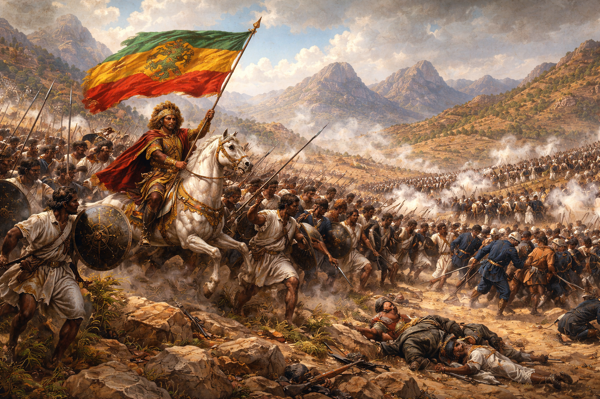

Historic Victory
A Defining Moment in African History
The Battle of Adwa stands as one of the most significant military victories in African history. On March 1, 1896, Ethiopian forces under the leadership of Emperor Menelik II decisively defeated the Italian army, securing Ethiopia's sovereignty and inspiring anti-colonial movements across the continent.
This remarkable victory made Ethiopia the only African nation to successfully resist European colonization during the Scramble for Africa, preserving its independence and becoming a symbol of African dignity and resistance.
